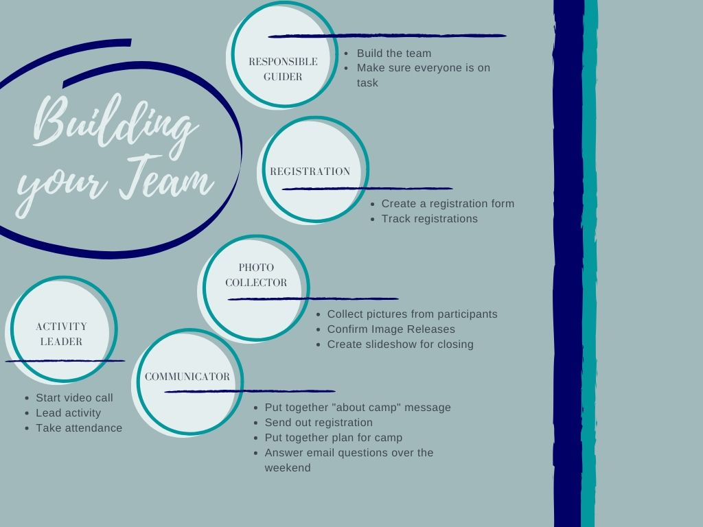

If you want to go fast, go alone. If you want to go far, go together.
Here's the thing. You don't actually need a team to run a virtual camp. If you want to plan it all yourself and (wo)man each of the video calls, it's technically possible to be a one-person team. However, it will be much less stressful to have others by your side.
As you're building your team, these are a few considerations you might want to keep in mind:
Here's an idea of some of the roles other volunteers can take on. You'll need to modify the tasks to suit your plans, but it's a good starting place.
One of the wonderful things about the Guiding sisterhood if that Guiding sisters are never far away. There are wonderful Facebook communities chock full of fabulous ideas for any type of programming. Here are a few but I bet you can find more local ones too!
background text: where I found helpful resources, communities of practice theory